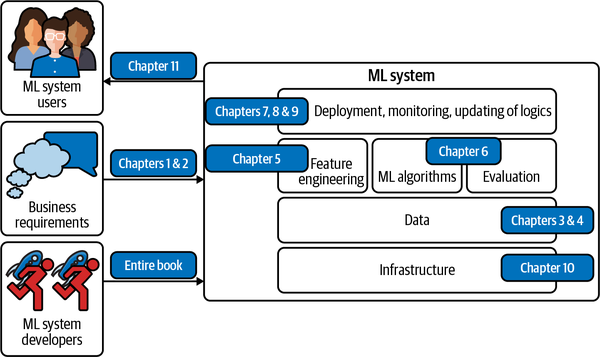
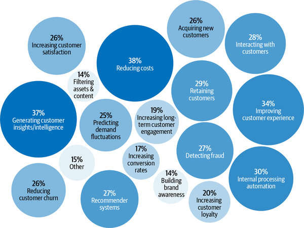
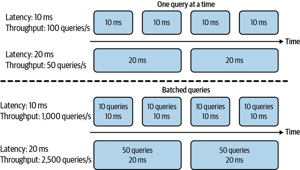
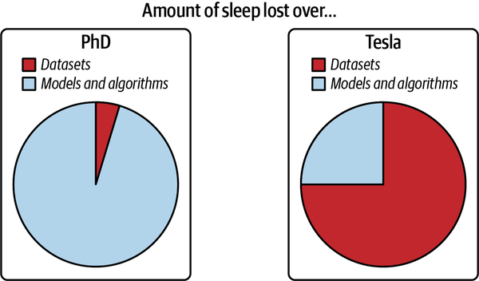

Chapter 1.Overview of Machine Learning Systems
📝 37 annotationsChapter 1. Overview of Machine Learning Systems
In November 2016, Google announced that it had incorporated its multilingual neural machine translation system into Google Translate, marking one of the first success stories of deep artificial neural networks in production at scale.1 According to Google, with this update, the quality of translation improved more in a single leap than they had seen in the previous 10 years combined.
This success of deep learning renewed the interest in machine learning (ML) at large. Since then, more and more companies have turned toward ML for solutions to their most challenging problems. In just five years, ML has found its way into almost every aspect of our lives: how we access information, how we communicate, how we work, how we find love. The spread of ML has been so rapid that it’s already hard to imagine life without it. Yet there are still many more use cases for ML waiting to be explored in fields such as health care, transportation, farming, and even in helping us understand the universe.2
Many people, when they hear “machine learning system,” think of just the ML algorithms being used such as logistic regression or different types of neural networks. However, the algorithm is only a small part of an ML system in production. The system also includes the business requirements that gave birth to the ML project in the first place, the interface where users and developers interact with your system, the data stack, and the logic for developing, monitoring, and updating your models, as well as the infrastructure that enables the delivery of that logic. Figure 1-1 shows you the different components of an ML system and in which chapters of this book they will be covered.
The Relationship Between MLOps and ML Systems Design
Ops in MLOps comes from DevOps, short for Developments and Operations. To operationalize something means to bring it into production, which includes deploying, monitoring, and maintaining it. MLOps is a set of tools and best practices for bringing ML into production.
ML systems design takes a system approach to MLOps, which means that it considers an ML system holistically to ensure that all the components and their stakeholders can work together to satisfy the specified objectives and requirements.

Figure 1-1. Different components of an ML system. “ML algorithms” is usually what people think of when they say machine learning, but it’s only a small part of the entire system.
There are many excellent books about various ML algorithms. This book doesn’t cover any specific algorithms in detail but rather helps readers understand the entire ML system as a whole. In other words, this book’s goal is to provide you with a framework to develop a solution that best works for your problem, regardless of which algorithm you might end up using. Algorithms might become outdated quickly as new algorithms are constantly being developed, but the framework proposed in this book should still work with new algorithms.
The first chapter of the book aims to give you an overview of what it takes to bring an ML model to production. Before discussing how to develop an ML system, it’s important to ask a fundamental question of when and when not to use ML. We’ll cover some of the popular use cases of ML to illustrate this point.
After the use cases, we’ll move on to the challenges of deploying ML systems, and we’ll do so by comparing ML in production to ML in research as well as to traditional software. If you’ve been in the trenches of developing applied ML systems, you might already be familiar with what’s written in this chapter. However, if you have only had experience with ML in an academic setting, this chapter will give an honest view of ML in the real world and set your first application up for success.
When to Use Machine Learning
As its adoption in the industry quickly grows, ML has proven to be a powerful tool for a wide range of problems. Despite an incredible amount of excitement and hype generated by people both inside and outside the field, ML is not a magic tool that can solve all problems. Even for problems that ML can solve, ML solutions might not be the optimal solutions. Before starting an ML project, you might want to ask whether ML is necessary or cost-effective.3
To understand what ML can do, let’s examine what ML solutions generally do:
Machine learning is an approach to (1) learn (2) complex patterns from (3) existing data and use these patterns to make (4) predictions on (5) unseen data.
We’ll look at each of the italicized keyphrases in the above framing to understand its implications to the problems ML can solve:
- 1. Learn: the system has the capacity to learn
- A relational database isn’t an ML system because it doesn’t have the capacity to learn. You can explicitly state the relationship between two columns in a relational database, but it’s unlikely to have the capacity to figure out the relationship between these two columns by itself. For an ML system to learn, there must be something for it to learn from. In most cases, ML systems learn from data. In supervised learning, based on example input and output pairs, ML systems learn how to generate outputs for arbitrary inputs. For example, if you want to build an ML system to learn to predict the rental price for Airbnb listings, you need to provide a dataset where each input is a listing with relevant characteristics (square footage, number of rooms, neighborhood, amenities, rating of that listing, etc.) and the associated output is the rental price of that listing. Once learned, this ML system should be able to predict the price of a new listing given its characteristics.
- 2. Complex patterns: there are patterns to learn, and they are complex
- ML solutions are only useful when there are patterns to learn. Sane people don’t invest money into building an ML system to predict the next outcome of a fair die because there’s no pattern in how these outcomes are generated.4 However, there are patterns in how stocks are priced, and therefore companies have invested billions of dollars in building ML systems to learn those patterns. Whether a pattern exists might not be obvious, or if patterns exist, your dataset or ML algorithms might not be sufficient to capture them. For example, there might be a pattern in how Elon Musk’s tweets affect cryptocurrency prices. However, you wouldn’t know until you’ve rigorously trained and evaluated your ML models on his tweets. Even if all your models fail to make reasonable predictions of cryptocurrency prices, it doesn’t mean there’s no pattern. Consider a website like Airbnb with a lot of house listings; each listing comes with a zip code. If you want to sort listings into the states they are located in, you wouldn’t need an ML system. Since the pattern is simple—each zip code corresponds to a known state—you can just use a lookup table. The relationship between a rental price and all its characteristics follows a much more complex pattern, which would be very challenging to manually specify. ML is a good solution for this. Instead of telling your system how to calculate the price from a list of characteristics, you can provide prices and characteristics, and let your ML system figure out the pattern. The difference between ML solutions and the lookup table solution as well as general traditional software solutions is shown in Figure 1-2. For this reason, ML is also called Software 2.0.5 ML has been very successful with tasks with complex patterns such as object detection and speech recognition. What is complex to machines is different from what is complex to humans. Many tasks that are hard for humans to do are easy for machines—for example, raising a number of the power of 10. On the other hand, many tasks that are easy for humans can be hard for machines—for example, deciding whether there’s a cat in a picture. Figure 1-2. Instead of requiring hand-specified patterns to calculate outputs, ML solutions learn patterns from inputs and outputs
- 3. Existing data: data is available, or it’s possible to collect data
- Because ML learns from data, there must be data for it to learn from. It’s amusing to think about building a model to predict how much tax a person should pay a year, but it’s not possible unless you have access to tax and income data of a large population. In the zero-shot learning (sometimes known as zero-data learning) context, it’s possible for an ML system to make good predictions for a task without having been trained on data for that task. However, this ML system was previously trained on data for other tasks, often related to the task in consideration. So even though the system doesn’t require data for the task at hand to learn from, it still requires data to learn. It’s also possible to launch an ML system without data. For example, in the context of continual learning, ML models can be deployed without having been trained on any data, but they will learn from incoming data in production.6 However, serving insufficiently trained models to users comes with certain risks, such as poor customer experience. Without data and without continual learning, many companies follow a “fake-it-til-you make it” approach: launching a product that serves predictions made by humans, instead of ML models, with the hope of using the generated data to train ML models later.
- 4. Predictions: it’s a predictive problem
- ML models make predictions, so they can only solve problems that require predictive answers. ML can be especially appealing when you can benefit from a large quantity of cheap but approximate predictions. In English, “predict” means “estimate a value in the future.” For example, what will the weather be like tomorrow? Who will win the Super Bowl this year? What movie will a user want to watch next? As predictive machines (e.g., ML models) are becoming more effective, more and more problems are being reframed as predictive problems. Whatever question you might have, you can always frame it as: “What would the answer to this question be?” regardless of whether this question is about something in the future, the present, or even the past. Compute-intensive problems are one class of problems that have been very successfully reframed as predictive. Instead of computing the exact outcome of a process, which might be even more computationally costly and time-consuming than ML, you can frame the problem as: “What would the outcome of this process look like?” and approximate it using an ML model. The output will be an approximation of the exact output, but often, it’s good enough. You can see a lot of it in graphic renderings, such as image denoising and screen-space shading.7
- 5. Unseen data: unseen data shares patterns with the training data
- The patterns your model learns from existing data are only useful if unseen data also share these patterns. A model to predict whether an app will get downloaded on Christmas 2020 won’t perform very well if it’s trained on data from 2008, when the most popular app on the App Store was Koi Pond. What’s Koi Pond? Exactly. In technical terms, it means your unseen data and training data should come from similar distributions. You might ask: “If the data is unseen, how do we know what distribution it comes from?” We don’t, but we can make assumptions—such as we can assume that users’ behaviors tomorrow won’t be too different from users’ behaviors today—and hope that our assumptions hold. If they don’t, we’ll have a model that performs poorly, which we might be able to find out with monitoring, as covered in Chapter 8, and test in production, as covered in Chapter 9.
Due to the way most ML algorithms today learn, ML solutions will especially shine if your problem has these additional following characteristics:
- 6. It’s repetitive
- Humans are great at few-shot learning: you can show kids a few pictures of cats and most of them will recognize a cat the next time they see one. Despite exciting progress in few-shot learning research, most ML algorithms still require many examples to learn a pattern. When a task is repetitive, each pattern is repeated multiple times, which makes it easier for machines to learn it.
- 7. The cost of wrong predictions is cheap
- Unless your ML model’s performance is 100% all the time, which is highly unlikely for any meaningful tasks, your model is going to make mistakes. ML is especially suitable when the cost of a wrong prediction is low. For example, one of the biggest use cases of ML today is in recommender systems because with recommender systems, a bad recommendation is usually forgiving—the user just won’t click on the recommendation. If one prediction mistake can have catastrophic consequences, ML might still be a suitable solution if, on average, the benefits of correct predictions outweigh the cost of wrong predictions. Developing self-driving cars is challenging because an algorithmic mistake can lead to death. However, many companies still want to develop self-driving cars because they have the potential to save many lives once self-driving cars are statistically safer than human drivers.
- 8. It’s at scale
- ML solutions often require nontrivial up-front investment on data, compute, infrastructure, and talent, so it’d make sense if we can use these solutions a lot. “At scale” means different things for different tasks, but, in general, it means making a lot of predictions. Examples include sorting through millions of emails a year or predicting which departments thousands of support tickets should be routed to a day. A problem might appear to be a singular prediction, but it’s actually a series of predictions. For example, a model that predicts who will win a US presidential election seems like it only makes one prediction every four years, but it might actually be making a prediction every hour or even more frequently because that prediction has to be continually updated to incorporate new information. Having a problem at scale also means that there’s a lot of data for you to collect, which is useful for training ML models.
- 9. The patterns are constantly changing
- Cultures change. Tastes change. Technologies change. What’s trendy today might be old news tomorrow. Consider the task of email spam classification. Today an indication of a spam email is a Nigerian prince, but tomorrow it might be a distraught Vietnamese writer. If your problem involves one or more constantly changing patterns, hardcoded solutions such as handwritten rules can become outdated quickly. Figuring how your problem has changed so that you can update your handwritten rules accordingly can be too expensive or impossible. Because ML learns from data, you can update your ML model with new data without having to figure out how the data has changed. It’s also possible to set up your system to adapt to the changing data distributions, an approach we’ll discuss in the section “Continual Learning”.
The list of use cases can go on and on, and it’ll grow even longer as ML adoption matures in the industry. Even though ML can solve a subset of problems very well, it can’t solve and/or shouldn’t be used for a lot of problems. Most of today’s ML algorithms shouldn’t be used under any of the following conditions:
-
It’s unethical. We’ll go over one case study where the use of ML algorithms can be argued as unethical in the section “Case study I: Automated grader’s biases”.
-
Simpler solutions do the trick. In Chapter 6, we’ll cover the four phases of ML model development where the first phase should be non-ML solutions.
-
It’s not cost-effective.
However, even if ML can’t solve your problem, it might be possible to break your problem into smaller components, and use ML to solve some of them. For example, if you can’t build a chatbot to answer all your customers’ queries, it might be possible to build an ML model to predict whether a query matches one of the frequently asked questions. If yes, direct the customer to the answer. If not, direct them to customer service.
I’d also want to caution against dismissing a new technology because it’s not as cost-effective as the existing technologies at the moment. Most technological advances are incremental. A type of technology might not be efficient now, but it might be over time with more investments. If you wait for the technology to prove its worth to the rest of the industry before jumping in, you might end up years or decades behind your competitors.
Machine Learning Use Cases
ML has found increasing usage in both enterprise and consumer applications. Since the mid-2010s, there has been an explosion of applications that leverage ML to deliver superior or previously impossible services to consumers.
With the explosion of information and services, it would have been very challenging for us to find what we want without the help of ML, manifested in either a search engine or a recommender system. When you visit a website like Amazon or Netflix, you’re recommended items that are predicted to best match your taste. If you don’t like any of your recommendations, you might want to search for specific items, and your search results are likely powered by ML.
If you have a smartphone, ML is likely already assisting you in many of your daily activities. Typing on your phone is made easier with predictive typing, an ML system that gives you suggestions on what you might want to say next. An ML system might run in your photo editing app to suggest how best to enhance your photos. You might authenticate your phone using your fingerprint or your face, which requires an ML system to predict whether a fingerprint or a face matches yours.
The ML use case that drew me into the field was machine translation, automatically translating from one language to another. It has the potential to allow people from different cultures to communicate with each other, erasing the language barrier. My parents don’t speak English, but thanks to Google Translate, now they can read my writing and talk to my friends who don’t speak Vietnamese.
ML is increasingly present in our homes with smart personal assistants such as Alexa and Google Assistant. Smart security cameras can let you know when your pets leave home or if you have an uninvited guest. A friend of mine was worried about his aging mother living by herself—if she falls, no one is there to help her get up—so he relied on an at-home health monitoring system that predicts whether someone has fallen in the house.
Even though the market for consumer ML applications is booming, the majority of ML use cases are still in the enterprise world. Enterprise ML applications tend to have vastly different requirements and considerations from consumer applications. There are many exceptions, but for most cases, enterprise applications might have stricter accuracy requirements but be more forgiving with latency requirements. For example, improving a speech recognition system’s accuracy from 95% to 95.5% might not be noticeable to most consumers, but improving a resource allocation system’s efficiency by just 0.1% can help a corporation like Google or General Motors save millions of dollars. At the same time, latency of a second might get a consumer distracted and opening something else, but enterprise users might be more tolerant of high latency. For people interested in building companies out of ML applications, consumer apps might be easier to distribute but much harder to monetize. However, most enterprise use cases aren’t obvious unless you’ve encountered them yourself.
According to Algorithmia’s 2020 state of enterprise machine learning survey, ML applications in enterprises are diverse, serving both internal use cases (reducing costs, generating customer insights and intelligence, internal processing automation) and external use cases (improving customer experience, retaining customers, interacting with customers) as shown in Figure 1-3.8

Figure 1-3. 2020 state of enterprise machine learning. Source: Adapted from an image by Algorithmia
Fraud detection is among the oldest applications of ML in the enterprise world. If your product or service involves transactions of any value, it’ll be susceptible to fraud. By leveraging ML solutions for anomaly detection, you can have systems that learn from historical fraud transactions and predict whether a future transaction is fraudulent.
Deciding how much to charge for your product or service is probably one of the hardest business decisions; why not let ML do it for you? Price optimization is the process of estimating a price at a certain time period to maximize a defined objective function, such as the company’s margin, revenue, or growth rate. ML-based pricing optimization is most suitable for cases with a large number of transactions where demand fluctuates and consumers are willing to pay a dynamic price—for example, internet ads, flight tickets, accommodation bookings, ride-sharing, and events.
To run a business, it’s important to be able to forecast customer demand so that you can prepare a budget, stock inventory, allocate resources, and update pricing strategy. For example, if you run a grocery store, you want to stock enough so that customers find what they’re looking for, but you don’t want to overstock, because if you do, your groceries might go bad and you lose money.
Acquiring a new user is expensive. As of 2019, the average cost for an app to acquire a user who’ll make an in-app purchase is $86.61.9 The acquisition cost for Lyft is estimated at $158/rider.10 This cost is so much higher for enterprise customers. Customer acquisition cost is hailed by investors as a startup killer.11 Reducing customer acquisition costs by a small amount can result in a large increase in profit. This can be done through better identifying potential customers, showing better-targeted ads, giving discounts at the right time, etc.—all of which are suitable tasks for ML.
After you’ve spent so much money acquiring a customer, it’d be a shame if they leave. The cost of acquiring a new user is approximated to be 5 to 25 times more expensive than retaining an existing one.12 Churn prediction is predicting when a specific customer is about to stop using your products or services so that you can take appropriate actions to win them back. Churn prediction can be used not only for customers but also for employees.
To prevent customers from leaving, it’s important to keep them happy by addressing their concerns as soon as they arise. Automated support ticket classification can help with that. Previously, when a customer opened a support ticket or sent an email, it needed to first be processed then passed around to different departments until it arrived at the inbox of someone who could address it. An ML system can analyze the ticket content and predict where it should go, which can shorten the response time and improve customer satisfaction. It can also be used to classify internal IT tickets.
Another popular use case of ML in enterprise is brand monitoring. The brand is a valuable asset of a business.13 It’s important to monitor how the public and your customers perceive your brand. You might want to know when/where/how it’s mentioned, both explicitly (e.g., when someone mentions “Google”) or implicitly (e.g., when someone says “the search giant”), as well as the sentiment associated with it. If there’s suddenly a surge of negative sentiment in your brand mentions, you might want to address it as soon as possible. Sentiment analysis is a typical ML task.
A set of ML use cases that has generated much excitement recently is in health care. There are ML systems that can detect skin cancer and diagnose diabetes. Even though many health-care applications are geared toward consumers, because of their strict requirements with accuracy and privacy, they are usually provided through a health-care provider such as a hospital or used to assist doctors in providing diagnosis.
Understanding Machine Learning Systems
Understanding ML systems will be helpful in designing and developing them. In this section, we’ll go over how ML systems are different from both ML in research (or as often taught in school) and traditional software, which motivates the need for this book.
Machine Learning in Research Versus in Production
As ML usage in the industry is still fairly new, most people with ML expertise have gained it through academia: taking courses, doing research, reading academic papers. If that describes your background, it might be a steep learning curve for you to understand the challenges of deploying ML systems in the wild and navigate an overwhelming set of solutions to these challenges. ML in production is very different from ML in research. Table 1-1 shows five of the major differences.
| Research | Production | |
|---|---|---|
| Requirements | State-of-the-art model performance on benchmark datasets | Different stakeholders have different requirements |
| Computational priority | Fast training, high throughput | Fast inference, low latency |
| Data | Statica | Constantly shifting |
| Fairness | Often not a focus | Must be considered |
| Interpretability | Often not a focus | Must be considered |
a A subfield of research focuses on continual learning: developing models to work with changing data distributions. We’ll cover continual learning in Chapter 9. | ||
Different stakeholders and requirements
People involved in a research and leaderboard project often align on one single objective. The most common objective is model performance—develop a model that achieves the state-of-the-art results on benchmark datasets. To edge out a small improvement in performance, researchers often resort to techniques that make models too complex to be useful.
There are many stakeholders involved in bringing an ML system into production. Each stakeholder has their own requirements. Having different, often conflicting, requirements can make it difficult to design, develop, and select an ML model that satisfies all the requirements.
Consider a mobile app that recommends restaurants to users. The app makes money by charging restaurants a 10% service fee on each order. This means that expensive orders give the app more money than cheap orders. The project involves ML engineers, salespeople, product managers, infrastructure engineers, and a manager:
- ML engineers
-
Want a model that recommends restaurants that users will most likely order from, and they believe they can do so by using a more complex model with more data.
- Sales team
-
Wants a model that recommends the more expensive restaurants since these restaurants bring in more service fees.
- Product team
-
Notices that every increase in latency leads to a drop in orders through the service, so they want a model that can return the recommended restaurants in less than 100 milliseconds.
- ML platform team
-
As the traffic grows, this team has been woken up in the middle of the night because of problems with scaling their existing system, so they want to hold off on model updates to prioritize improving the ML platform.
- Manager
-
Wants to maximize the margin, and one way to achieve this might be to let go of the ML team.14
“Recommending the restaurants that users are most likely to click on” and “recommending the restaurants that will bring in the most money for the app” are two different objectives, and in the section “Decoupling objectives”, we’ll discuss how to develop an ML system that satisfies different objectives. Spoiler: we’ll develop one model for each objective and combine their predictions.
Let’s imagine for now that we have two different models. Model A is the model that recommends the restaurants that users are most likely to click on, and model B is the model that recommends the restaurants that will bring in the most money for the app. A and B might be very different models. Which model should be deployed to the users? To make the decision more difficult, neither A nor B satisfies the requirement set forth by the product team: they can’t return restaurant recommendations in less than 100 milliseconds.
When developing an ML project, it’s important for ML engineers to understand requirements from all stakeholders involved and how strict these requirements are. For example, if being able to return recommendations within 100 milliseconds is a must-have requirement—the company finds that if your model takes over 100 milliseconds to recommend restaurants, 10% of users would lose patience and close the app—then neither model A nor model B will work. However, if it’s just a nice-to-have requirement, you might still want to consider model A or model B.
Production having different requirements from research is one of the reasons why successful research projects might not always be used in production. For example, ensembling is a technique popular among the winners of many ML competitions, including the famed $1 million Netflix Prize, and yet it’s not widely used in production. Ensembling combines “multiple learning algorithms to obtain better predictive performance than could be obtained from any of the constituent learning algorithms alone.”15 While it can give your ML system a small performance improvement, ensembling tends to make a system too complex to be useful in production, e.g., slower to make predictions or harder to interpret the results. We’ll discuss ensembling further in the section “Ensembles”.
For many tasks, a small improvement in performance can result in a huge boost in revenue or cost savings. For example, a 0.2% improvement in the click-through rate for a product recommender system can result in millions of dollars increase in revenue for an ecommerce site. However, for many tasks, a small improvement might not be noticeable for users. For the second type of task, if a simple model can do a reasonable job, complex models must perform significantly better to justify the complexity.
Computational priorities
When designing an ML system, people who haven’t deployed an ML system often make the mistake of focusing too much on the model development part and not enough on the model deployment and maintenance part.
During the model development process, you might train many different models, and each model does multiple passes over the training data. Each trained model then generates predictions on the validation data once to report the scores. The validation data is usually much smaller than the training data. During model development, training is the bottleneck. Once the model has been deployed, however, its job is to generate predictions, so inference is the bottleneck. Research usually prioritizes fast training, whereas production usually prioritizes fast inference.
One corollary of this is that research prioritizes high throughput whereas production prioritizes low latency. In case you need a refresh, latency refers to the time it takes from receiving a query to returning the result. Throughput refers to how many queries are processed within a specific period of time.
Terminology Clash
Some books make the distinction between latency and response time. According to Martin Kleppmann in his book Designing Data-Intensive Applications, “The response time is what the client sees: besides the actual time to process the request (the service time), it includes network delays and queueing delays. Latency is the duration that a request is waiting to be handled—during which it is latent, awaiting service.”19
In this book, to simplify the discussion and to be consistent with the terminology used in the ML community, we use latency to refer to the response time, so the latency of a request measures the time from when the request is sent to the time a response is received.
For example, the average latency of Google Translate is the average time it takes from when a user clicks Translate to when the translation is shown, and the throughput is how many queries it processes and serves a second.
If your system always processes one query at a time, higher latency means lower throughput. If the average latency is 10 ms, which means it takes 10 ms to process a query, the throughput is 100 queries/second. If the average latency is 100 ms, the throughput is 10 queries/second.
However, because most modern distributed systems batch queries to process them together, often concurrently, higher latency might also mean higher throughput. If you process 10 queries at a time and it takes 10 ms to run a batch, the average latency is still 10 ms but the throughput is now 10 times higher—1,000 queries/second. If you process 50 queries at a time and it takes 20 ms to run a batch, the average latency now is 20 ms and the throughput is 2,500 queries/second. Both latency and throughput have increased! The difference in latency and throughput trade-off for processing queries one at a time and processing queries in batches is illustrated in Figure 1-4.

Figure 1-4. When processing queries one at a time, higher latency means lower throughput. When processing queries in batches, however, higher latency might also mean higher throughput.
This is even more complicated if you want to batch online queries. Batching requires your system to wait for enough queries to arrive in a batch before processing them, which further increases latency.
In research, you care more about how many samples you can process in a second (throughput) and less about how long it takes for each sample to be processed (latency). You’re willing to increase latency to increase throughput, for example, with aggressive batching.
However, once you deploy your model into the real world, latency matters a lot. In 2017, an Akamai study found that a 100 ms delay can hurt conversion rates by 7%.20 In 2019, Booking.com found that an increase of about 30% in latency cost about 0.5% in conversion rates—“a relevant cost for our business.”21 In 2016, Google found that more than half of mobile users will leave a page if it takes more than three seconds to load.22 Users today are even less patient.
To reduce latency in production, you might have to reduce the number of queries you can process on the same hardware at a time. If your hardware is capable of processing many more queries at a time, using it to process fewer queries means underutilizing your hardware, increasing the cost of processing each query.
When thinking about latency, it’s important to keep in mind that latency is not an individual number but a distribution. It’s tempting to simplify this distribution by using a single number like the average (arithmetic mean) latency of all the requests within a time window, but this number can be misleading. Imagine you have 10 requests whose latencies are 100 ms, 102 ms, 100 ms, 100 ms, 99 ms, 104 ms, 110 ms, 90 ms, 3,000 ms, 95 ms. The average latency is 390 ms, which makes your system seem slower than it actually is. What might have happened is that there was a network error that made one request much slower than others, and you should investigate that troublesome request.
It’s usually better to think in percentiles, as they tell you something about a certain percentage of your requests. The most common percentile is the 50th percentile, abbreviated as p50. It’s also known as the median. If the median is 100 ms, half of the requests take longer than 100 ms, and half of the requests take less than 100 ms.
Higher percentiles also help you discover outliers, which might be symptoms of something wrong. Typically, the percentiles you’ll want to look at are p90, p95, and p99. The 90th percentile (p90) for the 10 requests above is 3,000 ms, which is an outlier.
Higher percentiles are important to look at because even though they account for a small percentage of your users, sometimes they can be the most important users. For example, on the Amazon website, the customers with the slowest requests are often those who have the most data on their accounts because they have made many purchases—that is, they’re the most valuable customers.23
It’s a common practice to use high percentiles to specify the performance requirements for your system; for example, a product manager might specify that the 90th percentile or 99.9th percentile latency of a system must be below a certain number.
Data
During the research phase, the datasets you work with are often clean and well-formatted, freeing you to focus on developing models. They are static by nature so that the community can use them to benchmark new architectures and techniques. This means that many people might have used and discussed the same datasets, and quirks of the dataset are known. You might even find open source scripts to process and feed the data directly into your models.
In production, data, if available, is a lot more messy. It’s noisy, possibly unstructured, constantly shifting. It’s likely biased, and you likely don’t know how it’s biased. Labels, if there are any, might be sparse, imbalanced, or incorrect. Changing project or business requirements might require updating some or all of your existing labels. If you work with users’ data, you’ll also have to worry about privacy and regulatory concerns. We’ll discuss a case study where users’ data is inadequately handled in the section “Case study II: The danger of “anonymized” data”.
In research, you mostly work with historical data, e.g., data that already exists and is stored somewhere. In production, most likely you’ll also have to work with data that is being constantly generated by users, systems, and third-party data.
Figure 1-5 has been adapted from a great graphic by Andrej Karpathy, director of AI at Tesla, that illustrates the data problems he encountered during his PhD compared to his time at Tesla.

Figure 1-5. Data in research versus data in production. Source: Adapted from an image by Andrej Karpathy24
Fairness
During the research phase, a model is not yet used on people, so it’s easy for researchers to put off fairness as an afterthought: “Let’s try to get state of the art first and worry about fairness when we get to production.” When it gets to production, it’s too late. If you optimize your models for better accuracy or lower latency, you can show that your models beat state of the art. But, as of writing this book, there’s no equivalent state of the art for fairness metrics.
You or someone in your life might already be a victim of biased mathematical algorithms without knowing it. Your loan application might be rejected because the ML algorithm picks on your zip code, which embodies biases about one’s socioeconomic background. Your resume might be ranked lower because the ranking system employers use picks on the spelling of your name. Your mortgage might get a higher interest rate because it relies partially on credit scores, which favor the rich and punish the poor. Other examples of ML biases in the real world are in predictive policing algorithms, personality tests administered by potential employers, and college rankings.
In 2019, “Berkeley researchers found that both face-to-face and online lenders rejected a total of 1.3 million creditworthy Black and Latino applicants between 2008 and 2015.” When the researchers “used the income and credit scores of the rejected applications but deleted the race identifiers, the mortgage application was accepted.”25 For even more galling examples, I recommend Cathy O’Neil’s Weapons of Math Destruction.26
ML algorithms don’t predict the future, but encode the past, thus perpetuating the biases in the data and more. When ML algorithms are deployed at scale, they can discriminate against people at scale. If a human operator might only make sweeping judgments about a few individuals at a time, an ML algorithm can make sweeping judgments about millions in split seconds. This can especially hurt members of minority groups because misclassification on them could only have a minor effect on models’ overall performance metrics.
If an algorithm can already make correct predictions on 98% of the population, and improving the predictions on the other 2% would incur multiples of cost, some companies might, unfortunately, choose not to do it. During a McKinsey & Company research study in 2019, only 13% of the large companies surveyed said they are taking steps to mitigate risks to equity and fairness, such as algorithmic bias and discrimination.27 However, this is changing rapidly. We’ll cover fairness and other aspects of responsible AI in Chapter 11.
Interpretability
In early 2020, the Turing Award winner Professor Geoffrey Hinton proposed a heatedly debated question about the importance of interpretability in ML systems. “Suppose you have cancer and you have to choose between a black box AI surgeon that cannot explain how it works but has a 90% cure rate and a human surgeon with an 80% cure rate. Do you want the AI surgeon to be illegal?”28
A couple of weeks later, when I asked this question to a group of 30 technology executives at public nontech companies, only half of them would want the highly effective but unable-to-explain AI surgeon to operate on them. The other half wanted the human surgeon.
While most of us are comfortable with using a microwave without understanding how it works, many don’t feel the same way about AI yet, especially if that AI makes important decisions about their lives.
Since most ML research is still evaluated on a single objective, model performance, researchers aren’t incentivized to work on model interpretability. However, interpretability isn’t just optional for most ML use cases in the industry, but a requirement.
First, interpretability is important for users, both business leaders and end users, to understand why a decision is made so that they can trust a model and detect potential biases mentioned previously.29 Second, it’s important for developers to be able to debug and improve a model.
Just because interpretability is a requirement doesn’t mean everyone is doing it. As of 2019, only 19% of large companies are working to improve the explainability of their algorithms.30
Discussion
Some might argue that it’s OK to know only the academic side of ML because there are plenty of jobs in research. The first part—it’s OK to know only the academic side of ML—is true. The second part is false.
While it’s important to pursue pure research, most companies can’t afford it unless it leads to short-term business applications. This is especially true now that the research community took the “bigger, better” approach. Oftentimes, new models require a massive amount of data and tens of millions of dollars in compute alone.
As ML research and off-the-shelf models become more accessible, more people and organizations would want to find applications for them, which increases the demand for ML in production.
The vast majority of ML-related jobs will be, and already are, in productionizing ML.
Machine Learning Systems Versus Traditional Software
Since ML is part of software engineering (SWE), and software has been successfully used in production for more than half a century, some might wonder why we don’t just take tried-and-true best practices in software engineering and apply them to ML.
That’s an excellent idea. In fact, ML production would be a much better place if ML experts were better software engineers. Many traditional SWE tools can be used to develop and deploy ML applications.
However, many challenges are unique to ML applications and require their own tools. In SWE, there’s an underlying assumption that code and data are separated. In fact, in SWE, we want to keep things as modular and separate as possible (see the Wikipedia page on separation of concerns).
On the contrary, ML systems are part code, part data, and part artifacts created from the two. The trend in the last decade shows that applications developed with the most/best data win. Instead of focusing on improving ML algorithms, most companies will focus on improving their data. Because data can change quickly, ML applications need to be adaptive to the changing environment, which might require faster development and deployment cycles.
In traditional SWE, you only need to focus on testing and versioning your code. With ML, we have to test and version our data too, and that’s the hard part. How to version large datasets? How to know if a data sample is good or bad for your system? Not all data samples are equal—some are more valuable to your model than others. For example, if your model has already trained on one million scans of normal lungs and only one thousand scans of cancerous lungs, a scan of a cancerous lung is much more valuable than a scan of a normal lung. Indiscriminately accepting all available data might hurt your model’s performance and even make it susceptible to data poisoning attacks.31
The size of ML models is another challenge. As of 2022, it’s common for ML models to have hundreds of millions, if not billions, of parameters, which requires gigabytes of random-access memory (RAM) to load them into memory. A few years from now, a billion parameters might seem quaint—like, “Can you believe the computer that sent men to the moon only had 32 MB of RAM?”
However, for now, getting these large models into production, especially on edge devices,32 is a massive engineering challenge. Then there is the question of how to get these models to run fast enough to be useful. An autocompletion model is useless if the time it takes to suggest the next character is longer than the time it takes for you to type.
Monitoring and debugging these models in production is also nontrivial. As ML models get more complex, coupled with the lack of visibility into their work, it’s hard to figure out what went wrong or be alerted quickly enough when things go wrong.
The good news is that these engineering challenges are being tackled at a breakneck pace. Back in 2018, when the Bidirectional Encoder Representations from Transformers (BERT) paper first came out, people were talking about how BERT was too big, too complex, and too slow to be practical. The pretrained large BERT model has 340 million parameters and is 1.35 GB.33 Fast-forward two years later, BERT and its variants were already used in almost every English search on Google.34
Summary
This opening chapter aimed to give readers an understanding of what it takes to bring ML into the real world. We started with a tour of the wide range of use cases of ML in production today. While most people are familiar with ML in consumer-facing applications, the majority of ML use cases are for enterprise. We also discussed when ML solutions would be appropriate. Even though ML can solve many problems very well, it can’t solve all the problems and it’s certainly not appropriate for all the problems. However, for problems that ML can’t solve, it’s possible that ML can be one part of the solution.
This chapter also highlighted the differences between ML in research and ML in production. The differences include the stakeholder involvement, computational priority, the properties of data used, the gravity of fairness issues, and the requirements for interpretability. This section is the most helpful to those coming to ML production from academia. We also discussed how ML systems differ from traditional software systems, which motivated the need for this book.
ML systems are complex, consisting of many different components. Data scientists and ML engineers working with ML systems in production will likely find that focusing only on the ML algorithms part is far from enough. It’s important to know about other aspects of the system, including the data stack, deployment, monitoring, maintenance, infrastructure, etc. This book takes a system approach to developing ML systems, which means that we’ll consider all components of a system holistically instead of just looking at ML algorithms. We’ll provide detail on what this holistic approach means in the next chapter.
1 Mike Schuster, Melvin Johnson, and Nikhil Thorat, “Zero-Shot Translation with Google’s Multilingual Neural Machine Translation System,” Google AI Blog, November 22, 2016, https://oreil.ly/2R1CB.
2 Larry Hardesty, “A Method to Image Black Holes,” MIT News, June 6, 2016, https://oreil.ly/HpL2F.
3 I didn’t ask whether ML is sufficient because the answer is always no.
4 Patterns are different from distributions. We know the distribution of the outcomes of a fair die, but there are no patterns in the way the outcomes are generated.
5 Andrej Karpathy, “Software 2.0,” Medium, November 11, 2017, https://oreil.ly/yHZrE.
6 We’ll go over online learning in Chapter 9.
7 Steke Bako, Thijs Vogels, Brian McWilliams, Mark Meyer, Jan Novák, Alex Harvill, Pradeep Sen, Tony Derose, and Fabrice Rousselle, “Kernel-Predicting Convolutional Networks for Denoising Monte Carlo Renderings,” ACM Transactions on Graphics 36, no. 4 (2017): 97, https://oreil.ly/EeI3j; Oliver Nalbach, Elena Arabadzhiyska, Dushyant Mehta, Hans-Peter Seidel, and Tobias Ritschel, “Deep Shading: Convolutional Neural Networks for Screen-Space Shading,” arXiv, 2016, https://oreil.ly/dSspz.
8 “2020 State of Enterprise Machine Learning,” Algorithmia, 2020, https://oreil.ly/wKMZB.
9 “Average Mobile App User Acquisition Costs Worldwide from September 2018 to August 2019, by User Action and Operating System,” Statista, 2019, https://oreil.ly/2pTCH.
10 Jeff Henriksen, “Valuing Lyft Requires a Deep Look into Unit Economics,” Forbes, May 17, 2019, https://oreil.ly/VeSt4.
11 David Skok, “Startup Killer: The Cost of Customer Acquisition,” For Entrepreneurs, 2018, https://oreil.ly/L3tQ7.
12 Amy Gallo, “The Value of Keeping the Right Customers,” Harvard Business Review, October 29, 2014, https://oreil.ly/OlNkl.
13 Marty Swant, “The World’s 20 Most Valuable Brands,” Forbes, 2020, https://oreil.ly/4uS5i.
14 It’s not unusual for the ML and data science teams to be among the first to go during a company’s mass layoff, as has been reported at IBM, Uber, Airbnb. See also Sejuti Das’s analysis “How Data Scientists Are Also Susceptible to the Layoffs Amid Crisis,” Analytics India Magazine, May 21, 2020, https://oreil.ly/jobmz.
15 Wikipedia, s.v. “Ensemble learning,” https://oreil.ly/5qkgp.
16 Julia Evans, “Machine Learning Isn’t Kaggle Competitions,” 2014, https://oreil.ly/p8mZq.
17 Lauren Oakden-Rayner, “AI Competitions Don’t Produce Useful Models,” September 19, 2019, https://oreil.ly/X6RlT.
18 Kawin Ethayarajh and Dan Jurafsky, “Utility Is in the Eye of the User: A Critique of NLP Leaderboards,” EMNLP, 2020, https://oreil.ly/4Ud8P.
19 Martin Kleppmann, Designing Data-Intensive Applications (Sebastopol, CA: O’Reilly, 2017).
20 Akamai Technologies, Akamai Online Retail Performance Report: Milliseconds Are Critical, April 19, 2017, https://oreil.ly/bEtRu.
21 Lucas Bernardi, Themis Mavridis, and Pablo Estevez, “150 Successful Machine Learning Models: 6 Lessons Learned at Booking.com,” KDD ’19, August 4–8, 2019, Anchorage, AK, https://oreil.ly/G5QNA.
22 “Consumer Insights,” Think with Google, https://oreil.ly/JCp6Z.
23 Kleppmann, Designing Data-Intensive Applications.
24 Andrej Karpathy, “Building the Software 2.0 Stack,” Spark+AI Summit 2018, video, 17:54, https://oreil.ly/Z21Oz.
25 Khristopher J. Brooks, “Disparity in Home Lending Costs Minorities Millions, Researchers Find,” CBS News, November 15, 2019, https://oreil.ly/UiHUB.
26 Cathy O’Neil, Weapons of Math Destruction (New York: Crown Books, 2016).
27 Stanford University Human-Centered Artificial Intelligence (HAI), The 2019 AI Index Report, 2019, https://oreil.ly/xs8mG.
28 Tweet by Geoffrey Hinton (@geoffreyhinton), February 20, 2020, https://oreil.ly/KdfD8.
29 For certain use cases in certain countries, users have a “right to explanation”: a right to be given an explanation for an output of the algorithm.
30 Stanford HAI, The 2019 AI Index Report.
31 Xinyun Chen, Chang Liu, Bo Li, Kimberly Lu, and Dawn Song, “Targeted Backdoor Attacks on Deep Learning Systems Using Data Poisoning,” arXiv, December 15, 2017, https://oreil.ly/OkAjb.
32 We’ll cover edge devices in Chapter 7.
33 Jacob Devlin, Ming-Wei Chang, Kenton Lee, and Kristina Toutanova, “BERT: Pre-training of Deep Bidirectional Transformers for Language Understanding,” arXiv, October 11, 2018, https://oreil.ly/TG3ZW.
34 Google Search On, 2020, https://oreil.ly/M7YjM.